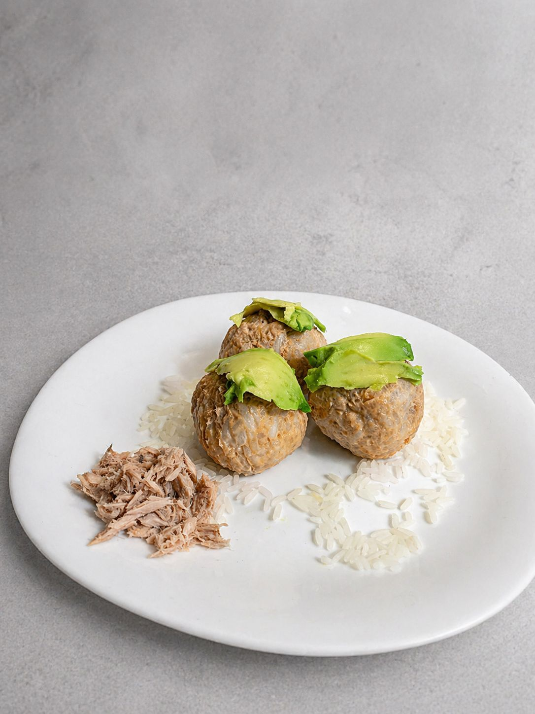
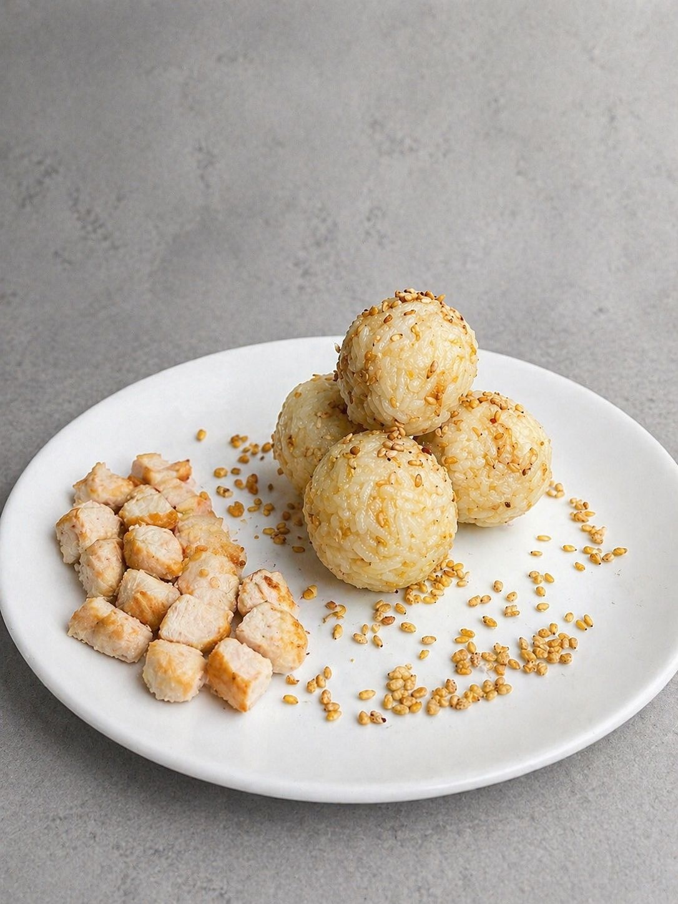
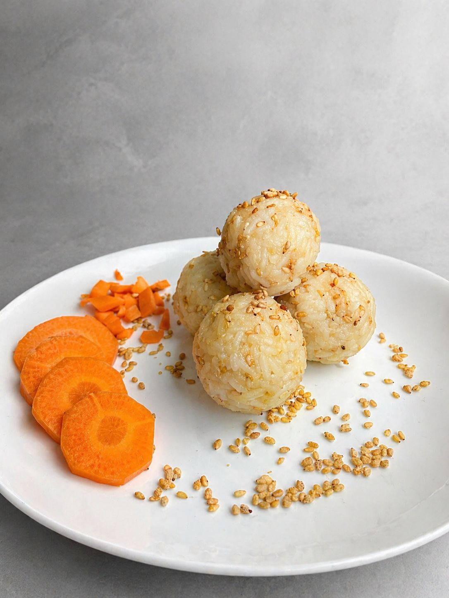

Menú

Pequeñas joyas de arroz, rellenas de proteína y semillas, con un vibrante toque de atún que conquista al primer bocado. Hechas para llevar y disfrutar donde sea.

Bocados de arroz rellenos de proteína y semillas, con un irresistible toque de pollo. Ideales para llevar contigo a cualquier lugar.

Esferas de arroz rellenas de proteína, semillas, sabor a base de zanahoria. Perfectas para llevar.